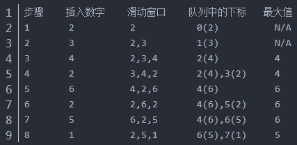

原文连接:https://www.cnblogs.com/wxwhnu/p/11438524.html
1 题目描述
2 思路和方法
（1）使用int max_number =*max_element(num.begin()+i,num.begin()+size+i);语句找到最大值，int count = num.size()-size+1; vector<int> result; result. push_back(max_number)。
（2）用一个双端队列，队列第一个位置保存当前窗口的最大值，当窗口滑动一次。a.判断当前最大值是否失效，即不在滑动窗口内；b.新增加的值从队尾开始比较，把所有比他小的值丢掉。

3 C++核心
（1）


1 class Solution {
2 public:
3 vector<int> maxInWindows(const vector<int>& num, unsigned int size)
4 {
5 int count = num.size()-size+1;
6 vector<int> result;
7 if(size==0 || num.size()==0){
8 return result;
9 }
10 for(int i =0;i<count;i++){
11 int max_number = *max_element(num.begin()+i,num.begin()+size+i);
12 result.push_back(max_number);
13 }
14 return result;
15 }
16 };（2）
1 class Solution {
2 public:
3 vector<int> maxInWindows(const vector<int>& num, unsigned int size)
4 {
5 vector<int> resu;
6 if (num.size() >= size && size >= 1) {
7 deque<int> numDeque;
8 //首先把前size个数按照规则压入双向队列
9 for (int i = 0; i != size; i++) {
10 while (!numDeque.empty() && num[i] >= num[numDeque.back()]) {
11 numDeque.pop_back(); //后面加入的数据大于队列中的数据时，队列中的数据依次弹出
12 }
13 numDeque.push_back(i);
14 }
15 //压入第一个最大值
16 //滑动窗口的最大值总是位于双向队列的头部
17 resu.push_back(num[numDeque.front()]);
18 for (int i = size; i != num.size(); i++) {
19 //首先按照规则压入新的值
20 while (!numDeque.empty() && num[i] >= num[numDeque.back()]) {
21 numDeque.pop_back(); //后面加入的数据大于队列中的数据时，队列中的数据依次弹出
22 }
23 //并且删除旧值，即滑出了窗口的值
24 if (!numDeque.empty() && numDeque.front() <= static_cast<int>(i - size)) {
25 numDeque.pop_front();
26 }
27 numDeque.push_back(i);
28 resu.push_back(num[numDeque.front()]);
29 }
30 }
31 return resu;
32 }
33 };4 C++完整代码
1 #include <iostream>
2 #include <vector>
3 #include <deque>
4 using namespace std;
5 vector<int> maxInWindows(const vector<int>& num, unsigned int size);
6 int main() {
7 vector<int> data{ 2, 3, 4, 2, 6, 2, 5, 1 };
8 vector<int> resu = maxInWindows(data, 3);
9 for (auto a : resu) {
10 cout << a << endl;
11 }
12 system("pause");
13 return 0;
14 }
15 vector<int> maxInWindows(const vector<int>& num, unsigned int size) {
16 vector<int> resu;
17 if (num.size() >= size && size >= 1) {
18 deque<int> numDeque;
19 //首先把前size个数按照规则压入双向队列
20 for (int i = 0; i != size; i++) {
21 while (!numDeque.empty() && num[i] >= num[numDeque.back()]) {
22 numDeque.pop_back();
23 }
24 numDeque.push_back(i);
25 }
26 //压入第一个最大值
27 //滑动窗口的最大值总是位于双向队列的头部
28 resu.push_back(num[numDeque.front()]);
29 for (int i = size; i != num.size(); i++) {
30 //首先按照规则压入新的值
31 while (!numDeque.empty() && num[i] >= num[numDeque.back()]) {
32 numDeque.pop_back();
33 }
34 //并且删除旧值，即滑出了窗口的值
35 if (!numDeque.empty() && numDeque.front() <= static_cast<int>(i - size)) {
36 numDeque.pop_front();
37 }
38 numDeque.push_back(i);
39 resu.push_back(num[numDeque.front()]);
40 }
41 }
42 return resu;
43 }参考资料
https://blog.csdn.net/u012477435/article/details/83351659#_1782（1）
https://blog.csdn.net/qq_43502142/article/details/87894236（图解）
https://blog.csdn.net/qq_37466121/article/details/88410390，https://blog.csdn.net/qq_43502142/article/details/87894236，https://blog.csdn.net/zjwreal/article/details/89295109（2）
https://blog.csdn.net/m0_37950361/article/details/82153147（核心代码，完整代码）
https://blog.csdn.net/qq_40788630/article/details/79662812（队列相关知识点）
https://blog.csdn.net/lee371042/article/details/81135007（队列与优先队列【有序】的总结）